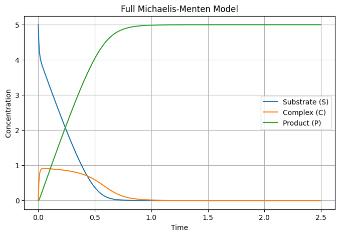
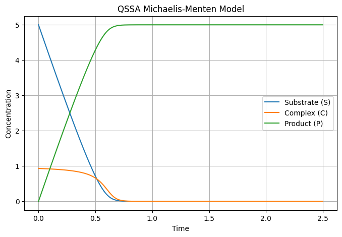
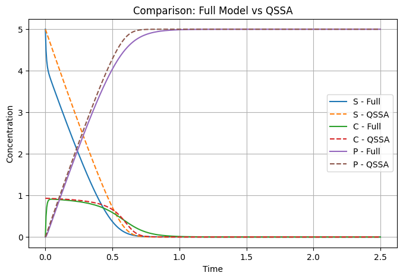
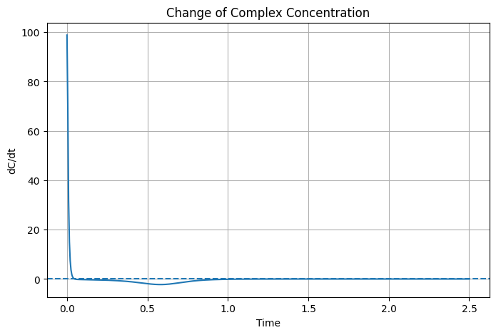

Computational Biology — ODE-based kinetic model and QSSA - Fachriza Fawwaz
The Michaelis-Menten reaction describes the conversion of substrate into product through an enzyme-substrate complex.
The reaction consists of substrate (S), enzyme (E), enzyme-substrate complex (C), and product (P). The enzyme conservation relationship is:
Therefore, the free enzyme concentration can be written as:
The reaction system can be represented using ordinary differential equations describing the concentration changes over time.
The equations were solved numerically using Python with the
odeint function.
| Parameter | Value |
|---|---|
| kf | 30 |
| kr | 1 |
| k2 | 10 |
| ET | 1 |
| Initial S | 5 |
| Initial C | 0 |
| Initial P | 0 |
| Simulation time | 0 – 2.5 |

" alt="Full Michaelis-Menten Model" >The substrate concentration (S) decreases over time as it is converted into product. The product concentration (P) increases throughout the simulation. The enzyme-substrate complex (C) increases rapidly during the initial phase and then decreases as the substrate becomes depleted.
The quasi-steady-state approximation (QSSA) assumes that after the initial transient phase, the concentration of the enzyme-substrate complex changes very slowly.
Starting from the equation for C:
Applying the QSSA condition gives:
This expression is then used to calculate the concentration of the enzyme-substrate complex during the simulation.

" alt="QSSA Model" >
" alt="Comparison between Full Model and QSSA" >The full model and QSSA model show a difference during the initial phase of the simulation. In the full model, the initial concentration of C is zero and the complex must first form. In contrast, the QSSA model directly estimates C from the quasi-steady-state relationship.
After the initial transient phase, the behavior of the two models becomes similar. This indicates that the QSSA can be used to approximate the system after the initial transient.

" alt="dC/dt" >The value of dC/dt changes rapidly during the beginning of the simulation. It then approaches zero as the system reaches the quasi-steady-state region. This behavior supports the use of the QSSA assumption after the initial transient phase.
The Michaelis-Menten reaction can be represented as a dynamic system using ordinary differential equations. The full model describes the changes in substrate, enzyme-substrate complex, and product concentrations over time.
The QSSA simplifies the model by assuming that dC/dt is approximately zero after the initial transient phase. The comparison between the full model and QSSA shows that the two models have similar behavior after this initial phase.